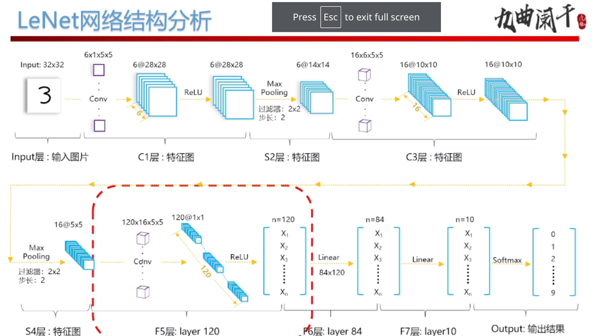

深度学习笔记
${toc}
术语
| zh | en | |
|---|---|---|
| 张量 | Tensor | <++> |
| 标量函数 | Scalar fucntion | <++> |
| 全连接层 | full connected layer | 输出层中的神经元和输⼊入层中各个输⼊入完全连 |
| 接 | ||
| 特征 | feature | 预测标签的因子 (权重) |
| 标签 | label | 真实值 |
DL Lec 1
some concepts
deep learningis a subset ofmachine learningmachine learningis a subset ofartificial intelligence
The difference between DL and traditional ML
- 深度学习不需要人工提取特征，传统机器学习需要
Important factors(关键要素)
- 深度神经网络模型
- 大规模数据集
- 大规模计算资源
Q: 解释深度学习近几年火爆的原因
A: 随着互联网的发展，网络上的语料和视频数据足够庞大
GPU 的算力逐年增长
Classifying dataset
- tranning Set
- validating Set
- test Set
genenralization (泛化)
- 过拟合 泛化误差大
- 欠拟合 训练集上和测试集上效果都差

lab1 环境配置
- 首先需要装
anaconda
yay -S anaconda
- 换源
conda config --add channels https://mirrors.tuna.tsinghua.edu.cn/anaconda/pkgs/free
conda config --add channels https://mirrors.tuna.tsinghua.edu.cn/anaconda/pkgs/main
conda config --set show_channel_urls yes
- 加载配置文件
source /opt/anaconda/bin/activate root
- 安装
pytorch的库

注意加上 sudo 因为要对 /opt 目录进行写入操作
- 测试 minst 数据集
动手学习深度学习第二章
Lec 3 神经网络简介
神经网络基本结构
- 输入层。表示原始输入数据，一般只有一层, 输入第一层记为神经网络的第0层
- 隐藏层。对输入数据进行 非线性变换 ,以进行特征提取和加工，一般有多个隐藏层。 第一个隐藏层记为神经网络的第一层
- 输出层。表示分类的结果。要分成几类，输出层就有几个神经元, 输出层只有一层。
神经网络的重要概念
- 输入
- 输出
- 激活函数
- 参数
Q: 全连接神经网络中某一层的输入输出维度如何确定
A: 输入维度由上一层神经元个数确定，输出维度由本层神经元确定
输入输出
\(H_i^{(i)}\) 下标 i 表示第个神经原，上标 1 表示在第 I 层, 整个表达式含意为 第 I 层 第 i 个神经元的值
\(w_{i j}^{(k)}\) i 表示前一层神经元的位置， j 表示后一层神经元的位置，k 表示在第 k 层 整个表达式的含意为 从 k - 1 层 的 第 i 个神经元 到 k 的第 j 个神经元的权值
\(b_i^{(i)}\) 下标 i 表示第个神经原，上标 i 表示在第 i 层, 整个表达式含意为 第 i 层 第 i 个神经元的偏置的值
计算公式
矩阵形式：
展开：
激活函数
常见的激活函数有
softmax\(\frac{1}{1 + e^{-x}}\)tan(h(x))\(tan(x)\)ReLUmax(0, x)
Q: 激活函数的作用是什么
A: 对神经网络加入非线性操作，增强神经网络的拟合能力， 如果不加入激活函数，那么隐藏层将退化为一层
最后对输入采用 softmax 函数进行处理。(保证数据范围在 (0, 1) 内, 且所有输出的值相加为一)
常见训练模型
神经网络-参数
全相连神经网络的参数分为两部分，权重和参数
权重数 = 上一层神经元 * 本层神经元 偏置数 = 本层神经元数量
训练网络目的就是了找到合适的权重和偏置
训练流程
初始化参数: 高斯随机
神经网络训练总揽

随机梯度📉
batch: 批, 计算一个 batch 即 一次迭代 batch-size
epoch: 轮
验证集测试
lab2
作业:

首先我们来实现一下课上所讲的 MNIST 数据集
- 第一步 定义网络结构
我们首先仅仅设置一个隐藏层

class FCNet1(nn.modules):
def __init__(self, **kwargs) -> None:
super(FCNet1, self).__init__(**kwargs)
self.hidden = nn.Linear(784, 256)
self.active = nn.ReLU()
self.output = nn.Linear(256, 10)
def forward(self, ../img):
hidden = self.hidden(../img)
active = self.active(hidden)
out = self.output(active)
return out
train_data = torchvision.datasets.MNIST(root='./data',
train=True,
download=False,
transform=trans)
test_data = torchvision.datasets.MNIST(root='./data',
train=False,
download=False,
transform=trans)
train_data_loader = data.DataLoader(
dataset=train_data,
batch_size=200,
shuffle=True, # 每一次用同一个batch 都打乱顺序
num_workers=4 # 工作核心
)
test_data_loader = data.DataLoader(
dataset=test_data,
batch_size=200,
shuffle=False, # 每一次用同一个batch 都打乱顺序
num_workers=4 # 工作核心
)
- 定义 loss function
loss = nn.CrossEntropyLoss()
- 定义 优化器
optimizer1 = optim.SGD(net1.parameters(), lr=0.01)
- 开始训练
def train(net,
train_iter,
test_iter,
loss,
num_epochs=10,
optimizer=None,
device=None):
n = 0 # 总数
for epoch in range(1, num_epochs + 1):
train_loss_sum, train_acc_sum = 0, 0
for train_images, labels in train_iter:
# 将数据存放在 CPU
assert isinstance(train_images, torch.Tensor)
assert isinstance(labels, torch.Tensor)
# torch.Size([200, 1, 28, 28])
train_images.to(device)
labels.to(device)
# torch.Size([200, 1])
# forward
output = net(train_images)
los = loss(output, labels).sum()
optimizer.zero_grad()
# backward
los.backward()
optimizer.step()
train_loss_sum += los
# argmax(dim=1) 返回 一列元素最大的那个下标 (200 * 10)
accruate = (output.argmax(dim=1) == labels).sum().item()
train_acc_sum += accruate
n += labels.shape[0]
test_accuracy = test(net, test_iter)
print(
f'epoch {epoch}, train_loss {train_loss_sum / n}, train_accuracy {train_acc_sum / n}, test_accuracy {test_accuracy}'
)
n = 0
- 如何调整学习率
首先从 0.01 开始，按照 10 的次幂开始调整。
调整心路历程 0.01 -> 0.1 -> 0.2 -> 0.15 -> 0.165
有关 autograd

卷积神经网络
使用全连接神经网络， 会有哪些问题? 1. 计算量太大，复杂度太高 2. 丢失图像信息
卷积神经网络的特点
- 局部连接
- 参数共享
卷积核的作用
interview
卷积层的局部连接特点指的是什么
相当与 局部连接的 全连接层,
卷积层的局部连接 有什么好处
减少参数数目, 提升计算速度
卷积层的 参数共享 特点指的是什么
对于 不同的 图像位置,使用同一个卷积核
卷积层的 参数共享 有什么好处
不会丢失图像的局部信息
等边表示: 局部特征所处的位置 不会影响卷积的 结果?
padding
因为经过卷积操作后, 得到的特征矩阵的维数会变小 \(m = n - k + 1\), 为了保证 矩阵维数不变, 我们可以先对矩阵进行填充后,再做卷积运算. \(p = \frac{k - 1}{2}\)
-
Vaild 卷积 不填充
-
Sane 卷积 填充, 不会丢失图像的边界信息
卷积运算步长
进行运算时, 矩阵的偏移量
多通道卷积运算
分成三个矩阵, 分别计算卷积, 最后将对应位置的数求和.
池化层


- 均值池化
- 最大池化
作用: 1. 减少特征维度, (降维, 减少复杂度) 2. 保留主要特征
问题
root='./data', 不要忘了.- 有趣的
id函数id函数返回的实际上是 变量所储存的 对象的 地址， 而不是自身的地址?

- why update happens outside the net class ?
- where we store the value of the weight parameter ?
for epoch in range(1, num_epoch + 1):
train_loss_sum, train_acc_sum = 0, 0
for train_images, labels in train_data_loader:
# 将数据存放在 CPU
assert isinstance(train_images, torch.Tensor)
train_images.to(device)
labels.to(device)
breakpoint()
# torch.Size([200, 1, 28, 28])
# forward
output = net(train_images)
los = loss(output, labels).sum()
optimizer.zero_grad()
# backward
los.backward()
optimizer.step()
train_loss_sum += los
- 注意 优化器 绑定了 一个网络的 所有参数。所以 一个优化器只能对应一个 网络结构。如果要在一个程序中 测试多个 网络结构的准确性，就需要定义多个网络结构。
以下面这个网络结构为例
train(net=net1,
train_iter=train_data_loader,
test_iter=test_data_loader,
loss=loss,
num_epochs=10,
optimizer=optimizer1,
device=device)
print("网络结构 784 - 32 - 16 - 10")
train(net=net2,
train_iter=train_data_loader,
test_iter=test_data_loader,
loss=loss,
num_epochs=15,
optimizer=optimizer1,
device=device)
如果 两次训练的 优化器是一样的，那么第二次训练的过程中，你会发现 测试准确率是个定值。(因为优化器只会改变第一个网络结构的参数)
-
lab3遇到的问题 -
matXX and matXX is not XX. 网络结构没调整好， 矩阵相乘时，维度出现了问题
- 打开图片, 转化为 tensor, 再 增加维度
# 打开图片
test_../img = Image.open(path)
test_../img = test_img.convert('L')
data = list(test_../img.getdata())
# 转化为 float32 类型
data = np.array(data, np.float32)
data.resize(32, 32)
# 归一化
data /= 255
# 添加 维度 28 * 28 -> 1 * 1 * 28 * 28
trains_../img = torch.from_numpy(data).unsqueeze(0).unsqueeze(0)